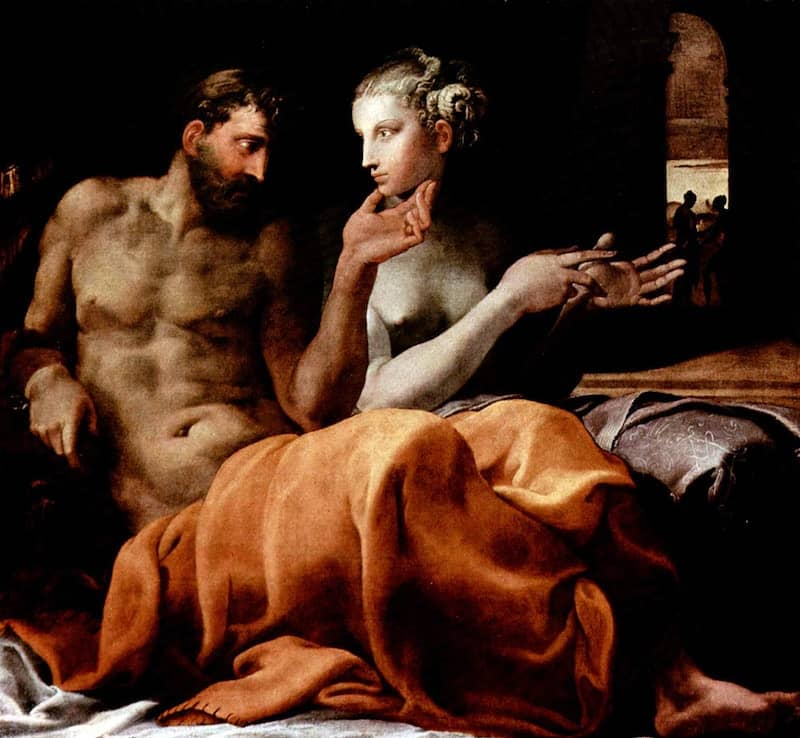

The presence of Ulysses in Dante’s hell should hardly be a striking image to one paying attention. Dante is, after all, literally walking in Virgil’s wake for the entirety of the Inferno, and Virgil’s Aeneid makes all of Homer’s doubts about the figure explicit, dubbing him “that ringleader of atrocity” (6.709). Homer’s Odysseus is hardly a figure without ambiguity–this is a man who spends the entirety of the Odyssey’s twenty-second book murdering men who scarcely have a chance against him, aided as he is by a goddess and hardened by years of war. Leodes has his pleas for his life met with a“lopping blow/ so that his head went down to mouth in dust” (350-370). He thereafter proceeds to directing the murder of Penelope’s handmaidens:
“These dead must be disposed of first of all.
Direct the women.
Tables and chairs will be
Scrubbed with sponges, rinsed and rinsed again.
Take them outside, these women,
Between the roundhouse and palisade,
And hack them with your swordblades till you cut
The life out of them, every thought of sweet
Aphrodite under the rutting sutors,
Where they lay down in secret.” (487-496)
So Odysseus seeks to humiliate these handmaidens before he has them butchered, sifting through the gore of their erstwhile lovers with the full knowledge of their own impending doom. Thus, the reader of the Odyssey is confronted with a bizarre paradox: a man who slaughters suppliants who beg for their lives, and mercilessly orders the deaths of women who, given their servant status, are likely enslaved and therefore entirely unguarded against his whims; yet this man has the tacit approval of heaven. It is the daughter of the highest god who has aided his journey thus far, and encourages and aids the slaughter (Athena in fact facilitates the test of the bow to “usher bloody slaughter in” at the beginning of Book Twenty-One). Even Virgil’s mutilated Deiphobus gives Ulysses a tacit connection to the heavens: his full nomenclature of Ulysses is, in fact, “that ringleader of atrocity…of the windking’s line (6.709-10). The “windking” being Zeus, the highest of gods (and “son of Laertes in the line of Zeus” is a frequent refrain throughout the Odyssey, another reinforcement of Odysseus’s connection with heaven). This is a strange juxtaposition to encounter, especially for a modern reader, one trained to associate the divine and the heavens with unambiguous moral purity. The presence of Ulysses in Dante’s hell therefore marks a significant change in thinking about such a character. Dante does not merely suggest retribution for the figure’s mythological crimes by condemning him to eternal punishment, but thereby actively severs any connection between Odysseus and the divine that gives him the license to carry out the deeds for which Dante sees him punished.
Dante suggests that the greatest suffering of those condemned to hell is the separation from God. Dante’s vision of hell seems to take its inception from the Book of Matthew, in which hell is the “outer darkness” in which there is “weeping and gnashing of teeth,” itself an expression of the misery of being excluded from God’s circle of light (8:12). Dante establishes this theme early in the Inferno. His fourth canto sees the Classical poets, although better off by far than the lower circle, condemned by having lived before Christ. Virgil tells Dante:
“Though they [the virtuous pagans] have merit,
That is not enough, for they were unbaptized,
Denied the gateway to the faith you profess.
And if they lived before the Christians lived,
They did not worship God aright.
And among these I am one.
For such defects, and for no other fault,
We are lost, and afflicted but in this,
That without hope we live in longing.” (34-42)
The “longing” in which these shades live is the longing for God. Their punishment is only to be excluded from such a presence. This fundamental absence of God’s presence is represented throughout by persistent assault on the senses, the presence of foul smells and a suggestion of cloying darkness. In Dante’s fifth canto, in which one finds the circle of the lustful, note is taken of the “malignant air” (86). His eighteenth canto doubles down on this motif: some of the damned are “snuffling with their snouts,” and this motion invokes the images of pigs, often associated with filth (104). “The banks…were coated with a mould/ offending eyes and nose” (104, 106-8). The flatterers and panderers dwell in excrement (113). What the absence of God suggests to Dante is filth and sickness, the inverse of the light and health with which he associates the divine.
It is the establishment of this theme of distance from God that makes the presence of Ulysses remarkable. After having seen Ulysses’ persistent association with the divine, even in Virgil, in which he is also explicitly condemned for his crimes against the Trojans, it is worth noting that Dante explicitly aligns God against Ulysses. Of Ulysses Virgil says: “Within this flame find torment/ Ulysses and Diomed. They are paired/ In God’s revenge as once they earned his wrath” (26.55-7). For Dante to completely divorce Ulysses from his associations with the divine is to represent a significant change in the way such a character is viewed. Ulysses has, in effect, gone from being a descendent of the highest god, favored and protected by the daughter goddess of the highest god, to being explicitly on the receiving end of the wrath of Dante’s God. The travails of Odysseus and his fellow Greeks are implied to be vengeance for the horrors committed at Troy, a city built by gods. But throughout his travails, Odysseus is never fully separated from the divine in a way that, to Dante, means punishment. On his journey, Odysseus also receives favor from divine figures like Circe and Calypso, even as he receives rancor from figures like Poseidon. Dante casts Ulysses thoroughly out from the graces of the divine, resulting in his eternal condemnation. Even Poseidon’s wrath was impermanent, as was Odysseus’s exile from home. The exile which Dante presents is of a more permanent nature. Since Dante’s hell is a place of exile from God and the divine, for Ulysses to be there represents a change in the way God is viewed.
For Odysseus to have offended Poseidon, as he does by blinding Polyphemus in Book Nine of the Odyssey, is to have alienated himself from one god. The persistent aid of Athena and other divine forces suggests that in a polytheistic religious system, alienation from one god will not result in entire alienation from divine forces and their graces. The naming of Ulysses as being in the line of the “windking” (Zeus) in the Aeneid maintains a sense of his being guarded and enclosed by his association with divine forces. This suggests that the scorn of Deiphobus’ shade can do little to touch such a figure, since he is still within “the line of Zeus.” But, of course, within Dante’s religious system, there is but one God rather than a host of them, and to alienate oneself from this God leaves one outside the circle of the divine entirely. The presence of Ulysses in the Inferno therefore suggests a drastic change in the view of the divine through the view of one mythological figure. A massive change in the conception of morality is suggested as well. Since, in the polytheistic Greek system one can carry out morally questionable or outright reprehensible behavior and still be likely to retain the favor of some divine forces, as indeed Odysseus does, then this indicates differing sets of rules of conduct that are highly context-dependent. Dante, on the other hand, reveals the change inherent in the Judeo-Christian system and its effect on the conception of morality: one God, and the one unifying set of moral rules and rules of conduct that having one divine force suggests. Ulysses is therefore unshielded by fragmented divine forces from retribution for his conduct in Dante’s view. Having alienated what Dante sees as the only God, Ulysses has effectually been alienated, cast out, from the divine itself. The guard of Athena can hardly be useful to Ulysses in the moral universe of Dante, who would undoubtedly have seen the goddess as part of the cadre of “false and lying gods” which Virgil repudiates (1.72).
The final fatal journey which Ulysses recounts to Virgil and Dante is itself an important expression of this separation from the divine. His presence in a lower circle of hell than the virtuous pagans is especially noteworthy, as this separation is itself only a further extension of Ulysses’ separation from the divine. In Dante’s Twenty-Sixth Canto, Ulysses recalls his desire to exceed the boundaries of mortal exploration and knowledge:
“Not tenderness for a son, nor filial duty
Toward my aged father, nor love I owed
Penelope that would have made her glad
Could overcome the fervor that was mine
To gain experience of the world
And learn about man’s vices, and his worth…
I and my shipmates had grown old and slow
By the time we reached the narrow strait
Where Hercules marked off the limits,
Warning all men to go no farther.” (94-109)
Ulysses has been explicitly condemned to the circle of the fraudulent because of the Trojan Horse, but his final journey represents an implicit reason for punishment as well: Ulysses has pushed against the boundaries of mortality, seeking out knowledge reserved for the divine alone. Ulysses goes on to encourage his men to seek out the world where “no one lives,” a further implication of this realm’s prohibition against mortal knowledge (117). Here, Dante has placed Ulysses again beyond the ken of the divine, implicitly associating him with mortality, and further dissociating him from the privileges of divine knowledge. Ulysses admonishes the reluctance of his men: “Consider how your souls were sown/ you were not made to live like brutes or beasts/ but to pursue virtue and knowledge” (118-20). Here, Ulysses is implicitly encouraging the transgression of a boundary between the divine and the mortal. His pursuit of divine knowledge recalls the transgression of Adam and Eve, eating from the Tree of Knowledge of Good and Evil, and being subsequently brutally punished for their attempt to access something which can only be the province of God. The dashing to pieces of Ulysses’ ship represents the final divorce of this figure from any divine connections (138). Dante thoroughly reinforces Ulysses’ mortality and exclusion from the realm of the divine not merely with his God-ordained punishment in hell, but with his death, resulting as it does from Ulysses’ attempt to grasp an understanding from which he is excluded by dint of being mortal.
The presence of Ulysses in the hell built by Dante is both a commentary on the Classical tradition of such a figure as well as an indicator of the vast change in moral systems represented by the Judeo-Christian tradition within which Dante is working. While Virgil condemns Odysseus for his crimes against the Trojans, he nevertheless maintains a tacit connection between this figure and the divine. Dante does something entirely new by completely divorcing this figure from the divine, and in Dante’s view, therefore any connection to approval or heroism. The presence of Ulysses is a more subtle expression of Dante’s disapproval for the “false and lying gods” of the Greco-Roman world. Dante re-appropriates a figure which had formerly enjoyed some approval by the heavens, however ambiguously he was represented, and thoroughly out casts him from the circle of divine regard. Dante is, through this re-contextualization, representing the shift from the polytheistic system of ancient Greece to the Judeo-Christian tradition, in which one must follow a unifying set of rules in order to avert permanently alienating oneself from the singular divine force which governs Dante’s universe.
Works Cited
Dante. Inferno. Trans. Robert Hollander and Jean Hollander. New York: Random House, 2003. Print.
“Matthew 8:12 But the subjects of the kingdom will be thrown outside, into the darkness, where there will be weeping and gnashing of teeth.”.” Matthew 8:12 But the subjects of the kingdom will be thrown outside, into the darkness, where there will be weeping and gnashing of teeth.”. N.p., n.d. Web. 15 Dec. 2016.
Virgil. The Aeneid. Trans. Robert Fitzgerald. New York: Random House, 1983. Print.
Homer. The Odyssey. Trans. Robert Fitzgerald. New York: Farrar, Straus, and Giroux, 1998. Print.